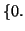
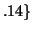

<!DOCTYPE HTML PUBLIC "-//W3C//DTD HTML 3.2 Final//EN">
<!-- Converted with jLaTeX2HTML 98.1p1 release (March 2nd, 1998) + JP patch 2.0 (March 16th, 1998)
patched by Kenshi Muto (mutou@three-a.co.jp), Three-A Systems,Co.,Ltd.
LaTeX2HTML 98.1p1 release (March 2nd, 1998)
originally by Nikos Drakos (nikos@cbl.leeds.ac.uk), CBLU, University of Leeds
* revised and updated by:  Marcus Hennecke, Ross Moore, Herb Swan
* with significant contributions from:
  Jens Lippmann, Marek Rouchal, Martin Wilck and others  -->
<HTML>
<HEAD>
<TITLE>$B4pK\E*$J%W%m%C%H(J</TITLE>
<META NAME="description" CONTENT="$B4pK\E*$J%W%m%C%H(J">
<META NAME="keywords" CONTENT="MaTX">
<META NAME="resource-type" CONTENT="document">
<META NAME="distribution" CONTENT="global">
<META HTTP-EQUIV="Content-Type" CONTENT="text/html; charset=iso-2022-jp">
<LINK REL="STYLESHEET" HREF="MaTX.css">
<LINK REL="next" HREF="node81.htm">
<LINK REL="previous" HREF="node79.htm">
<LINK REL="up" HREF="node79.htm">
<LINK REL="next" HREF="node81.htm">
</HEAD>
<BODY BGCOLOR=NavajoWhite>
<!-- Navigation Panel -->
<A NAME="tex2html1588"
 HREF="node81.htm">
</A> 
<A NAME="tex2html1584"
 HREF="node79.htm">
</A> 
<A NAME="tex2html1578"
 HREF="node79.htm">
</A> 
<A NAME="tex2html1586"
 HREF="node1.htm">
</A> 
<A NAME="tex2html1587"
 HREF="node247.htm">
</A> 
<BR>
<STRONG> Next:</STRONG> <A NAME="tex2html1589"
 HREF="node81.htm">$BJ#?t$N@~(J</A>
<STRONG> Up:</STRONG> <A NAME="tex2html1585"
 HREF="node79.htm">xplot</A>
<STRONG> Previous:</STRONG> <A NAME="tex2html1579"
 HREF="node79.htm">xplot</A>
<BR>
<BR>
<!-- End of Navigation Panel -->

<H2><A NAME="SECTION00921000000000000000">&#160;</A>
<A NAME="4116">&#160;</A>
<BR>
$B4pK\E*$J%W%m%C%H(J
</H2><FONT SIZE="-1">
$B$b$7(J<TT>Y</TT>$B$,2#%Y%/%H%k$J$i(J<TT>xplot(Y)</TT>$B$K$h$C$F(J<TT>Y</TT>$B$N(J
$B@.J,$H$=$N@.J,$N;X?t$rBP1~$5$;$?@~7A%W%m%C%H$,:n@.$5$l$k!#(J
$B$?$H$($P!$$"$k<B?t$N=89g(J</FONT><FONT SIZE="-1">, </FONT>.48<FONT SIZE="-1">, </FONT>.84<FONT SIZE="-1">, </FONT>1.<FONT SIZE="-1">, </FONT>.91<FONT SIZE="-1">, </FONT>.6<FONT SIZE="-1">, </FONT><FONT SIZE="-1">$B$r(J
$B%W%m%C%H$9$k$K$O!$$=$N<B?t$r%Y%/%H%k$NCf$KF~$l$F(J
<TT>xplot()</TT>$B4X?t$r<!$N$h$&$K<B9T$9$k!#(J
</FONT>
<P><FONT SIZE="-1">
<BR CLEAR="ALL">
<HR></FONT><PRE>
  Y = [0. .48 .84 1. .91 .6 .14];
  xplot(Array(Y));
</PRE><FONT SIZE="-1">
<BR CLEAR="ALL">
<HR></FONT>
<P>
<FONT SIZE="-1">$B$3$N7k2L(J<I>xplot</I>$B$,5/F0$7!$%G!<%?$,<+F0E*$K%9%1!<%k$5$l$F(J
$B%-%c%s%P%9>e$KI=<($5$l!$(JX$B<4$H(JY$B<4$,IA$+$l$k!#(J
$B%G!<%?$,I=<($5$l$?8e$G!$%^%&%9$r;H$C$F(J
$B%i%Y%k!$%?%$%H%k!$%9%1!<%k!$%U%)%s%H$rJQ99$7$?$j!$2hLL$N%O!<%I%3%T!<$r(J
$B%M%C%H%o!<%/$K@\B3$5$l$F$$$k%W%j%s%?$K=PNO$7$?$j!$(JFIG$B%3!<%I$KMn$7$F(J
T<SMALL>E</SMALL>X$B$NJ8=q$K<h$j9~$s$@$j$9$k$3$H$,$G$-$k!#(J
</FONT>
<P>
<FONT SIZE="-1">$B$b$7!$(J<TT>X</TT>$B$H(J<TT>Y</TT>$B$,F1$8D9$5$N%Y%/%H%k$J$i!$(J<TT>xplot(X,Y)</TT>$B$K$h$C$F(J
<TT>X</TT>$B$N@.J,$H(J<TT>Y</TT>$B$N@.J,$rBP1~$5$;$?@~7A%W%m%C%H$,:n@.$5$l$k!#Nc$($P!$(J
</FONT>
<P><FONT SIZE="-1">
<BR CLEAR="ALL">
<HR></FONT><PRE>
  t = [0.0:0.05:4*PI];
  Y = sin(t);
  xplot(t, Y);
</PRE><FONT SIZE="-1">
<BR CLEAR="ALL">
<HR></FONT>
<P>
<FONT SIZE="-1">
$B$K$h$C$F!$;~9o(J<TT>0.0</TT>$B$+$i(J<TT>4*PI</TT>$B$^$G$N@589GH$rIA$/$3$H$,$G$-$k!#(J
</FONT>
<BR><HR>
<ADDRESS>
Masanobu KOGA
$BJ?@.(J10$BG/(J8$B7n(J19$BF|(J
</ADDRESS>
</BODY>
</HTML>
